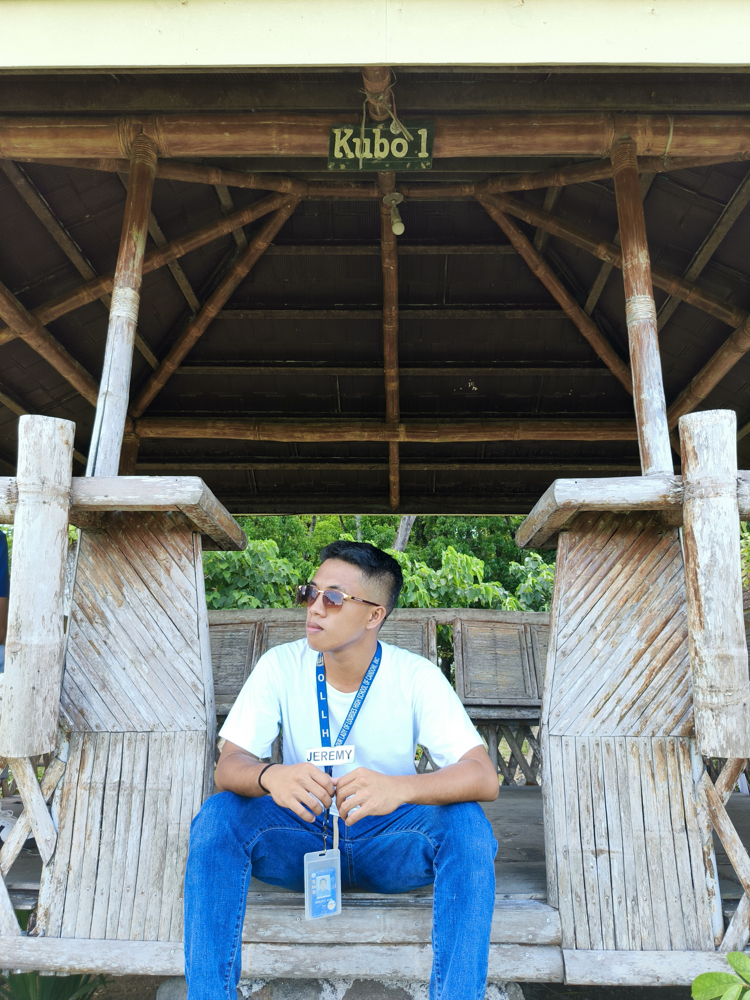
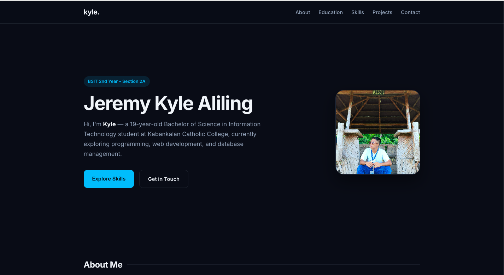
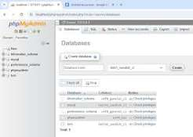

Kabankalan Catholic College
Bachelor of Science in Information Technology (BSIT)
Hi, I'm Kyle — a 19-year-old Bachelor of Science in Information Technology student at Kabankalan Catholic College, currently exploring programming, web development, and database management.

I am a second-year BSIT student from Candoni, Negros Occidental, building a solid foundation in software development and information technology. Outside of academics, I enjoy staying active and competitive through playing volleyball and online games.
Bachelor of Science in Information Technology (BSIT)
Secondary Education
Right now, I am focused on applying what I learn in class—combining C++, PHP, responsive web design, and phpMyAdmin database management to build functional academic and personal IT projects.

A responsive, minimalist dark-mode one-page portfolio built from scratch to showcase my BSIT profile, skills, and academic journey.

Hands-on practice building dynamic web pages connected to local databases, focusing on forms, basic CRUD operations, and backend logic.

Strengthening core programming logic and problem-solving while exploring introductory mobile app layouts and development workflows.